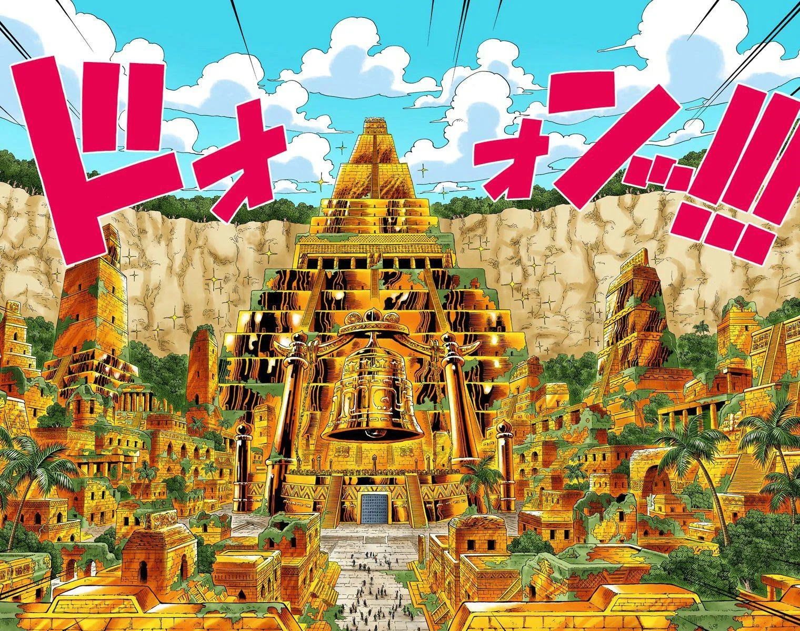

Dados do local
Shandora é uma cidade fictícia do universo de Dragon Quest, localizada no continente de Alefgard. É conhecida por sua arquitetura única e por ser um ponto central na história do jogo.
Clima
O clima em Shandora é geralmente temperado, com verões quentes e invernos frios. A cidade é cercada por montanhas, o que influencia seu clima e proporciona belas paisagens.